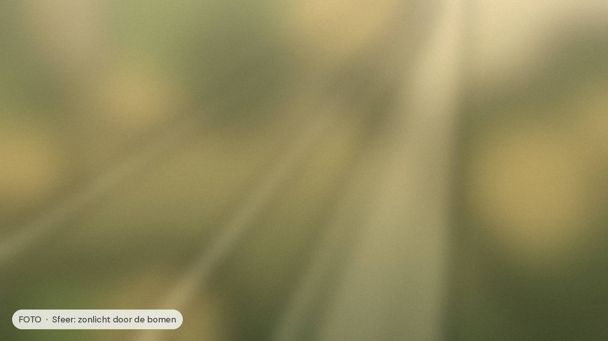

Welkom!
Hoi, ik ben [Naam]
Coach, ervaringsdeskundige en liefhebber van lange wandelingen. Ik neem je mee in wat ik zelf heb geleerd: dat je pas echt goed voor anderen kunt zorgen als je ook goed voor jezelf zorgt.

Ik geloof in leiden vanuit rust, in terug naar de basis, en in anderen helpen hetzelfde te doen.
Zo kan ik je helpen
Mijn aanbod

1-op-1 coaching
Persoonlijke begeleiding in jouw tempo, gericht op energie, grenzen en keuzes die kloppen.

Vitaal Leiderschap
Het groepsprogramma voor leidinggevenden. Leren, delen en oefenen met gelijkgestemden.

Workshops & lezingen
Inspirerende sessies voor teams en organisaties over vitaliteit, werkplezier en duurzaam presteren.
“Ik kwam binnen met een volle agenda en een leeg gevoel. Nu kies ik weer bewust, en mijn team merkt het ook.”
Naam klant, teamleider
Zo werkt het
In drie stappen naar meer vitaliteit
Kennismaken
We bespreken waar je staat en wat je nodig hebt. Gratis en vrijblijvend.
Traject op maat
Een plan dat past bij jouw rol, jouw tempo en jouw doelen.
Vitaal verder
Je neemt nieuwe gewoontes mee die blijven werken, ook als het druk wordt.
Gratis
5 vitaliteitstips voor drukke leiders
Kleine stappen met groot effect. Ontvang de gids in je mailbox en begin vandaag nog.
Geen spam. Afmelden kan altijd.